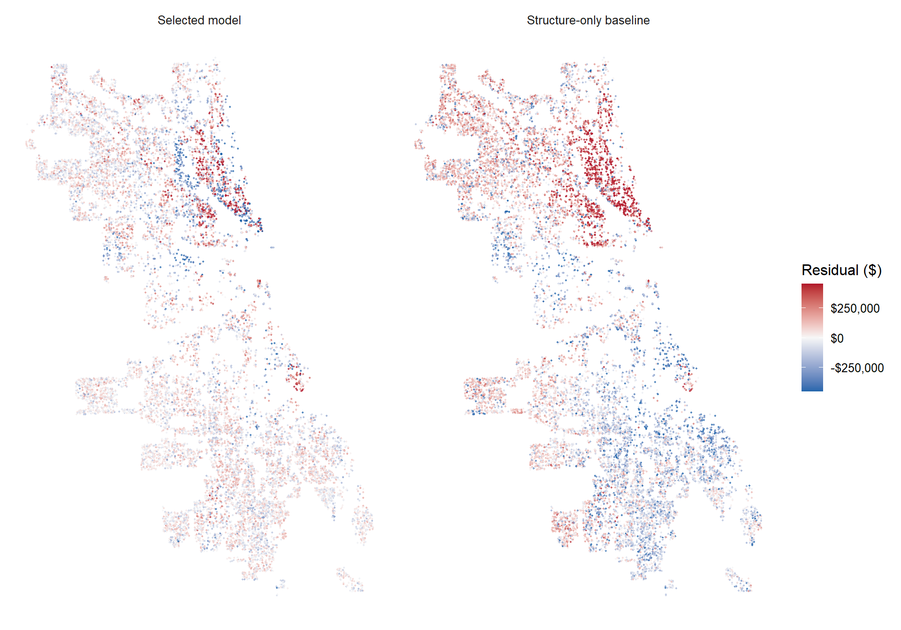

Code
library(tidyverse)
library(tidycensus)
library(tigris)
library(sf)
library(caret)
library(spdep)
library(nngeo)
options(scipen = 999)MUSA 5080 · Team assignment
In class we built a house price model for Philadelphia. Now your team does it for a city you haven’t modeled: Chicago.
The Cook County Assessor’s Office has to value every home in the county, including the vast majority that didn’t sell this year. Assessments drive property tax bills. When they’re wrong in a systematic way, some households pay more than their share. A 2017 Chicago Tribune investigation, “The Tax Divide,” found exactly that in Cook County: lower-value homes were assessed at higher shares of their worth than expensive ones.
Build a model that predicts single-family sale prices in Chicago, 2023–2025, using only the tools from this course. The file contains only features of the house itself. Everything about location is yours to build.
| File | What’s in it |
|---|---|
chicago_train.csv |
About 80% of the houses, with sale prices |
chicago_test.csv |
The other 20%, without sale prices. You predict them; we score you. |
The test houses were held out by house, not by sale, so a house that sold twice is entirely on one side. Your CV RMSE is your estimate. Your test RMSE is the truth. If they’re far apart, something leaked.
Due: Friday, October 30. All teammates renders the file on their portfolio and every member submits that link on Canvas. One teammate uploads team_XX_predictions.csv.
Individual accountability: Q7 on October 30 asks each of you about this model: which features you used and why, your CV and test RMSE, and where the model fails worst. Make sure everyone can explain all of it.
You must predict every test house, so fill NAs in a feature rather than filtering.
Open data from 2023–2025 only.
Nothing built from sale prices. Would the Assessor have this number for a house that didn’t sell?
Transform predictors, not sale_price.
No features built from other houses’ sale prices.
| Model log | Every model you tried, in order, with CV RMSE and Moran’s I. Each row has a note saying why you tried it. |
| Features | Incorporate the feature engineering tricks - including the spatial ones covered these past few weeks. |
| Diagnostics | Residual maps for your baseline and final model, and what changed. |
| Error analysis | Where your final model fails worst, and whose homes it over-values (Part 4). |
| Reasoning | Choices justified by evidence from your own analysis. |
Load the packages and set display options. Modeling functions are defined alongside their use in Part 2.
library(tidyverse)
library(tidycensus)
library(tigris)
library(sf)
library(caret)
library(spdep)
library(nngeo)
options(scipen = 999)money <- scales::label_dollar(accuracy = 1)
pct <- scales::label_percent(accuracy = 0.1)
theme_set(theme_minimal(base_size = 12))
dir.create("data/assignment5", recursive = TRUE, showWarnings = FALSE)
dir.create("reports/assignment5", recursive = TRUE, showWarnings = FALSE)Build every feature on all_sales, so training and test houses get identical features. Split off train again whenever you add something.
raw_train <- read_csv("data/assignment5/chicago_train.csv", show_col_types = FALSE)
raw_test <- read_csv("data/assignment5/chicago_test.csv", show_col_types = FALSE)
stopifnot(!anyDuplicated(raw_train$id), !anyDuplicated(raw_test$id),
length(intersect(raw_train$id, raw_test$id)) == 0)
all_sales <- bind_rows(
raw_train %>% mutate(split = "train"),
raw_test %>% mutate(split = "test")
) %>%
st_as_sf(coords = c("lon", "lat"), crs = 4326, remove = FALSE) %>%
st_transform(3435) # Illinois East State Plane, feet
all_sales %>% st_drop_geometry() %>% count(split)# A tibble: 2 × 2
split n
<chr> <int>
1 test 5789
2 train 23200Useful sources: the Chicago Data Portal (find a dataset’s ID under its API button), the Census via tidycensus, and Cook County’s open data.
Decide which training sales are market sales. Record each rule, why, and how many it removed. Then explore: at least four plots, including a map of price.
glimpse(all_sales)Rows: 28,989
Columns: 24
$ id <dbl> 1, 2, 3, 4, 5, 6, 7, 8, 9, 12, 13, 15, 16, 17, 18, 2…
$ lat <dbl> 41.80783, 41.81394, 41.91532, 41.90860, 41.73467, 41…
$ lon <dbl> -87.61052, -87.70823, -87.70617, -87.76126, -87.6043…
$ sale_date <chr> "January 02, 2023", "January 02, 2023", "January 02,…
$ year <dbl> 2023, 2023, 2023, 2023, 2023, 2023, 2023, 2023, 2023…
$ sale_qrt <dbl> 1, 1, 1, 1, 1, 1, 1, 1, 1, 1, 1, 1, 1, 1, 1, 1, 1, 1…
$ sale_price <dbl> 510000, 180000, 701500, 199000, 56500, 69500, 400000…
$ is_multisale <dbl> 0, 0, 0, 0, 0, 0, 0, 0, 0, 0, 0, 0, 0, 0, 0, 0, 0, 0…
$ building_000sf <dbl> 3.060, 0.968, 1.547, 1.171, 1.260, 1.528, 1.272, 1.8…
$ building_age <dbl> 132, 81, 131, 102, 60, 140, 74, 115, 52, 77, 69, 64,…
$ lotsize_acre <dbl> 0.05165289, 0.08677686, 0.07174013, 0.08815427, 0.02…
$ num_bedrooms <dbl> 6, 2, 3, 3, 3, 3, 3, 3, 3, 3, 3, 3, 3, 2, 2, 3, 3, 4…
$ num_full_baths <dbl> 3, 1, 1, 1, 1, 1, 1, 2, 1, 1, 1, 1, 1, 1, 1, 3, 1, 2…
$ num_half_baths <dbl> 1, 0, 0, 0, 1, 0, 0, 0, 1, 0, 1, 1, 0, 0, 0, 0, 0, 1…
$ num_fireplaces <dbl> 0, 0, 0, 0, 0, 0, 1, 0, 0, 0, 0, 0, 0, 0, 0, 0, 1, 0…
$ garage_size <dbl> 0, 1, 0, 0, 0, 2, 1, 2, 2, 1, 0, 0, 1, 2, 2, 1, 2, 2…
$ central_air <dbl> 1, 0, 0, 0, 1, 0, 1, 0, 1, 0, 1, 1, 0, 0, 0, 0, 1, 1…
$ one_story <dbl> 0, 0, 0, 1, 0, 0, 1, 0, 1, 0, 1, 1, 1, 1, 1, 0, 1, 0…
$ full_basement <dbl> 1, 0, 1, 1, 1, 1, 1, 1, 1, 1, 1, 1, 1, 1, 1, 1, 1, 0…
$ finished_basement <dbl> 0, 0, 0, 1, 0, 1, 0, 1, 0, 1, 1, 1, 0, 1, 0, 1, 0, 0…
$ brick_stone_ext <dbl> 1, 0, 0, 1, 1, 0, 1, 0, 1, 1, 1, 1, 1, 1, 0, 0, 1, 1…
$ warmairfurnace <dbl> 1, 1, 1, 1, 1, 0, 0, 1, 1, 0, 1, 1, 0, 1, 1, 0, 1, 1…
$ split <chr> "train", "train", "train", "train", "train", "train"…
$ geometry <POINT [US_survey_foot]> POINT (1181311 1873392), POINT (1…all_sales %>% st_drop_geometry() %>% slice_head(n=6) %>% print(width = Inf)# A tibble: 6 × 23
id lat lon sale_date year sale_qrt sale_price is_multisale
<dbl> <dbl> <dbl> <chr> <dbl> <dbl> <dbl> <dbl>
1 1 41.8 -87.6 January 02, 2023 2023 1 510000 0
2 2 41.8 -87.7 January 02, 2023 2023 1 180000 0
3 3 41.9 -87.7 January 02, 2023 2023 1 701500 0
4 4 41.9 -87.8 January 02, 2023 2023 1 199000 0
5 5 41.7 -87.6 January 03, 2023 2023 1 56500 0
6 6 41.8 -87.6 January 03, 2023 2023 1 69500 0
building_000sf building_age lotsize_acre num_bedrooms num_full_baths
<dbl> <dbl> <dbl> <dbl> <dbl>
1 3.06 132 0.0517 6 3
2 0.968 81 0.0868 2 1
3 1.55 131 0.0717 3 1
4 1.17 102 0.0882 3 1
5 1.26 60 0.0285 3 1
6 1.53 140 0.108 3 1
num_half_baths num_fireplaces garage_size central_air one_story full_basement
<dbl> <dbl> <dbl> <dbl> <dbl> <dbl>
1 1 0 0 1 0 1
2 0 0 1 0 0 0
3 0 0 0 0 0 1
4 0 0 0 0 1 1
5 1 0 0 1 0 1
6 0 0 2 0 0 1
finished_basement brick_stone_ext warmairfurnace split
<dbl> <dbl> <dbl> <chr>
1 0 1 1 train
2 0 0 1 train
3 0 0 1 train
4 1 1 1 train
5 0 1 1 train
6 1 0 0 trainall_sales %>%
st_drop_geometry() %>%
count(split)# A tibble: 2 × 2
split n
<chr> <int>
1 test 5789
2 train 23200all_sales %>% st_drop_geometry() %>% filter(split == "train") %>% summary() id lat lon sale_date
Min. : 1 Min. :41.64 Min. :-87.85 Length :23200
1st Qu.: 7352 1st Qu.:41.74 1st Qu.:-87.74 N.unique : 1002
Median :14526 Median :41.80 Median :-87.68 N.blank : 0
Mean :14538 Mean :41.83 Mean :-87.69 Min.nchar: 12
3rd Qu.:21759 3rd Qu.:41.94 3rd Qu.:-87.64 Max.nchar: 18
Max. :28989 Max. :42.02 Max. :-87.52
year sale_qrt sale_price is_multisale
Min. :2023 Min. :1.000 Min. : 10373 Min. :0.0000
1st Qu.:2023 1st Qu.:2.000 1st Qu.: 184500 1st Qu.:0.0000
Median :2024 Median :2.000 Median : 302950 Median :0.0000
Mean :2024 Mean :2.463 Mean : 442784 Mean :0.0531
3rd Qu.:2025 3rd Qu.:3.000 3rd Qu.: 479900 3rd Qu.:0.0000
Max. :2025 Max. :4.000 Max. :21800000 Max. :1.0000
building_000sf building_age lotsize_acre num_bedrooms
Min. :0.246 Min. : 0.00 Min. :0.00567 Min. : 1.000
1st Qu.:1.029 1st Qu.: 65.00 1st Qu.:0.07174 1st Qu.: 2.000
Median :1.237 Median : 80.00 Median :0.08609 Median : 3.000
Mean :1.463 Mean : 81.81 Mean :0.08987 Mean : 3.073
3rd Qu.:1.690 3rd Qu.:105.00 3rd Qu.:0.10285 3rd Qu.: 4.000
Max. :9.937 Max. :172.00 Max. :3.30138 Max. :12.000
NAs :1
num_full_baths num_half_baths num_fireplaces garage_size
Min. :1.000 Min. :0.0000 Min. :0.0000 Min. :0.000
1st Qu.:1.000 1st Qu.:0.0000 1st Qu.:0.0000 1st Qu.:1.000
Median :1.000 Median :0.0000 Median :0.0000 Median :2.000
Mean :1.468 Mean :0.3786 Mean :0.2224 Mean :1.354
3rd Qu.:2.000 3rd Qu.:1.0000 3rd Qu.:0.0000 3rd Qu.:2.000
Max. :8.000 Max. :7.0000 Max. :9.0000 Max. :4.000
NAs :38 NAs :349 NAs :11
central_air one_story full_basement finished_basement
Min. :0.000 Min. :0.0000 Min. :0.0000 Min. :0.0000
1st Qu.:0.000 1st Qu.:0.0000 1st Qu.:0.0000 1st Qu.:0.0000
Median :0.000 Median :0.0000 Median :1.0000 Median :0.0000
Mean :0.373 Mean :0.4822 Mean :0.7333 Mean :0.3147
3rd Qu.:1.000 3rd Qu.:1.0000 3rd Qu.:1.0000 3rd Qu.:1.0000
Max. :1.000 Max. :1.0000 Max. :1.0000 Max. :1.0000
NAs :2
brick_stone_ext warmairfurnace split
Min. :0.0000 Min. :0.0000 Length :23200
1st Qu.:0.0000 1st Qu.:1.0000 N.unique : 1
Median :1.0000 Median :1.0000 N.blank : 0
Mean :0.5688 Mean :0.8403 Min.nchar: 5
3rd Qu.:1.0000 3rd Qu.:1.0000 Max.nchar: 5
Max. :1.0000 Max. :1.0000
NAs :7 all_sales %>%
st_drop_geometry() %>%
filter(split == "train") %>%
select(id, sale_price, building_000sf, num_bedrooms,
num_full_baths, lotsize_acre, building_age, is_multisale) %>%
arrange(building_000sf) %>%
slice_head(n = 10)# A tibble: 10 × 8
id sale_price building_000sf num_bedrooms num_full_baths lotsize_acre
<dbl> <dbl> <dbl> <dbl> <dbl> <dbl>
1 28485 700000 0.246 1 1 0.0812
2 7253 50000 0.4 2 1 0.0717
3 13715 175000 0.4 2 1 0.0677
4 28191 200000 0.4 1 1 0.129
5 26453 68000 0.408 2 1 0.0717
6 20475 307000 0.42 2 1 0.106
7 1465 55000 0.432 2 1 0.0723
8 21650 155000 0.44 2 1 0.0702
9 21660 121000 0.441 3 1 0.129
10 7443 285000 0.448 2 1 0.122
# ℹ 2 more variables: building_age <dbl>, is_multisale <dbl>Some of the smallest buildings have room counts that seem high for their size. One record reports 246 square feet and a $700,000 sale price. We flagged it for further checking rather than removing it. We interpret building_000sf as thousands of square feet based on the column name, but the supplied files do not explain whether it includes basements or other structures.
all_sales %>%
st_drop_geometry() %>%
filter(split == "train") %>%
select(id, sale_price, building_000sf, num_bedrooms,
num_full_baths, building_age, is_multisale) %>%
arrange(desc(num_bedrooms), building_000sf) %>%
slice_head(n = 10) %>%
print(width = Inf)# A tibble: 10 × 7
id sale_price building_000sf num_bedrooms num_full_baths building_age
<dbl> <dbl> <dbl> <dbl> <dbl> <dbl>
1 24605 2675000 5.81 12 6 142
2 28187 1950000 7.12 12 8 4
3 26332 1469000 2.93 9 4 0
4 15682 1945000 2.94 9 4 1
5 4348 1331000 3.89 9 3 47
6 4349 1331000 3.89 9 3 47
7 23563 1495000 3.89 9 3 49
8 23564 1495000 3.89 9 3 49
9 22357 1850000 3.91 9 3 131
10 19468 2600000 4.33 9 5 136
is_multisale
<dbl>
1 1
2 0
3 0
4 0
5 1
6 1
7 1
8 1
9 0
10 0The houses with the most bedrooms generally have larger building areas. But two pairs have matching values in this table and are flagged as multisales, so we looked more closely at those records.
all_sales %>%
filter(id %in% c(4348, 4349, 23563, 23564)) %>%
mutate(
location = st_as_text(geometry)
) %>%
st_drop_geometry() %>%
arrange(as.Date(sale_date, "%B %d, %Y"), id) %>%
print(width = Inf)# A tibble: 4 × 24
id lat lon sale_date year sale_qrt sale_price is_multisale
<dbl> <dbl> <dbl> <chr> <dbl> <dbl> <dbl> <dbl>
1 4348 41.9 -87.6 May 31, 2023 2023 2 1331000 1
2 4349 41.9 -87.6 May 31, 2023 2023 2 1331000 1
3 23563 41.9 -87.6 April 28, 2025 2025 2 1495000 1
4 23564 41.9 -87.6 April 28, 2025 2025 2 1495000 1
building_000sf building_age lotsize_acre num_bedrooms num_full_baths
<dbl> <dbl> <dbl> <dbl> <dbl>
1 3.89 47 0.0165 9 3
2 3.89 47 0.0177 9 3
3 3.89 49 0.0178 9 3
4 3.89 49 0.0165 9 3
num_half_baths num_fireplaces garage_size central_air one_story full_basement
<dbl> <dbl> <dbl> <dbl> <dbl> <dbl>
1 1 1 0 1 0 0
2 1 1 0 1 0 0
3 1 1 0 1 0 0
4 1 1 0 1 1 0
finished_basement brick_stone_ext warmairfurnace split location
<dbl> <dbl> <dbl> <chr> <chr>
1 0 1 1 train POINT (1176118 1907359)
2 0 1 1 train POINT (1176082 1907357)
3 0 1 1 train POINT (1176084 1907286)
4 0 1 1 train POINT (1176120 1907287)These records share sale dates and prices, but their locations and some property attributes differ. They are not exact duplicates. Cook County uses is_multisale for transactions involving multiple parcels. A shared price does not tell us what each parcel sold for separately. We assume the course CSV uses the same definition. Assessor’s example, official model documentation.
all_sales %>%
st_drop_geometry() %>%
count(split, is_multisale) %>%
group_by(split) %>%
mutate(percent = round(100 * n / sum(n), 2))# A tibble: 4 × 4
# Groups: split [2]
split is_multisale n percent
<chr> <dbl> <int> <dbl>
1 test 0 5509 95.2
2 test 1 280 4.84
3 train 0 21968 94.7
4 train 1 1232 5.31We exclude the 1,232 training records flagged as multi-parcel sales (5.31%) because their prices may cover several parcels. That leaves 21,968 training observations. We keep every test record and do not set a minimum or maximum price cutoff. A very cheap or expensive sale is not necessarily an invalid one.
all_sales %>%
st_drop_geometry() %>%
filter(split == "train", is_multisale == 0) %>%
select(id, sale_date, sale_price, building_000sf,
num_bedrooms, num_full_baths, building_age) %>%
arrange(sale_price) %>%
slice_head(n = 10) %>%
print(width = Inf)# A tibble: 10 × 7
id sale_date sale_price building_000sf num_bedrooms
<dbl> <chr> <dbl> <dbl> <dbl>
1 11215 January 05, 2024 10373 0.704 2
2 25805 July 18, 2025 11000 1.62 3
3 13289 March 27, 2024 11500 1.58 3
4 5895 July 12, 2023 12000 1.37 5
5 5979 July 14, 2023 12000 0.918 2
6 7796 September 06, 2023 12000 1.21 4
7 13265 March 27, 2024 12000 1.08 3
8 21144 December 09, 2024 12000 0.952 3
9 23575 April 29, 2025 12545 1.43 4
10 25907 July 22, 2025 12560 0.784 2
num_full_baths building_age
<dbl> <dbl>
1 1 131
2 2 105
3 2 19
4 2 109
5 1 103
6 1 130
7 1 81
8 1 75
9 1 43
10 1 132all_sales %>%
st_drop_geometry() %>%
filter(split == "train", is_multisale == 0) %>%
select(id, sale_date, sale_price, building_000sf,
num_bedrooms, num_full_baths, building_age) %>%
arrange(desc(sale_price)) %>%
slice_head(n = 10) %>%
print(width = Inf)# A tibble: 10 × 7
id sale_date sale_price building_000sf num_bedrooms
<dbl> <chr> <dbl> <dbl> <dbl>
1 19188 September 25, 2024 14250000 9.94 7
2 23087 April 11, 2025 6750000 7.71 6
3 26143 July 29, 2025 6750000 5.83 6
4 22445 March 07, 2025 6650000 8.09 7
5 4356 May 31, 2023 6500000 8.62 4
6 2541 April 10, 2023 5650000 5.81 8
7 12182 February 20, 2024 5650000 4.21 4
8 9536 October 31, 2023 5300000 5.15 9
9 27362 September 05, 2025 5150000 6.50 6
10 3267 April 28, 2023 5100000 5.88 3
num_full_baths building_age
<dbl> <dbl>
1 8 12
2 5 120
3 4 17
4 6 113
5 4 15
6 5 115
7 4 146
8 7 0
9 5 18
10 3 15We exclude multi-parcel sales from training but retain every test house. We do not remove training sales solely because their prices are unusually low or high.
all_sales <- all_sales %>%
mutate(
sale_date = as.Date(sale_date, "%B %d, %Y"),
property_group = paste(round(lon, 5), round(lat, 5)),
eligible = split == "train" & is_multisale == 0 &
is.finite(sale_price) & sale_price > 0
)
stopifnot(!anyNA(all_sales$sale_date), all(all_sales$year %in% 2023:2025))
train_single <- all_sales %>%
filter(split == "train", is_multisale == 0)
View(train_single)
glimpse(train_single)Rows: 21,968
Columns: 26
$ id <dbl> 1, 2, 3, 4, 5, 6, 7, 8, 9, 12, 13, 15, 16, 17, 18, 2…
$ lat <dbl> 41.80783, 41.81394, 41.91532, 41.90860, 41.73467, 41…
$ lon <dbl> -87.61052, -87.70823, -87.70617, -87.76126, -87.6043…
$ sale_date <date> 2023-01-02, 2023-01-02, 2023-01-02, 2023-01-02, 202…
$ year <dbl> 2023, 2023, 2023, 2023, 2023, 2023, 2023, 2023, 2023…
$ sale_qrt <dbl> 1, 1, 1, 1, 1, 1, 1, 1, 1, 1, 1, 1, 1, 1, 1, 1, 1, 1…
$ sale_price <dbl> 510000, 180000, 701500, 199000, 56500, 69500, 400000…
$ is_multisale <dbl> 0, 0, 0, 0, 0, 0, 0, 0, 0, 0, 0, 0, 0, 0, 0, 0, 0, 0…
$ building_000sf <dbl> 3.060, 0.968, 1.547, 1.171, 1.260, 1.528, 1.272, 1.8…
$ building_age <dbl> 132, 81, 131, 102, 60, 140, 74, 115, 52, 77, 69, 64,…
$ lotsize_acre <dbl> 0.05165289, 0.08677686, 0.07174013, 0.08815427, 0.02…
$ num_bedrooms <dbl> 6, 2, 3, 3, 3, 3, 3, 3, 3, 3, 3, 3, 3, 2, 2, 3, 3, 4…
$ num_full_baths <dbl> 3, 1, 1, 1, 1, 1, 1, 2, 1, 1, 1, 1, 1, 1, 1, 3, 1, 2…
$ num_half_baths <dbl> 1, 0, 0, 0, 1, 0, 0, 0, 1, 0, 1, 1, 0, 0, 0, 0, 0, 1…
$ num_fireplaces <dbl> 0, 0, 0, 0, 0, 0, 1, 0, 0, 0, 0, 0, 0, 0, 0, 0, 1, 0…
$ garage_size <dbl> 0, 1, 0, 0, 0, 2, 1, 2, 2, 1, 0, 0, 1, 2, 2, 1, 2, 2…
$ central_air <dbl> 1, 0, 0, 0, 1, 0, 1, 0, 1, 0, 1, 1, 0, 0, 0, 0, 1, 1…
$ one_story <dbl> 0, 0, 0, 1, 0, 0, 1, 0, 1, 0, 1, 1, 1, 1, 1, 0, 1, 0…
$ full_basement <dbl> 1, 0, 1, 1, 1, 1, 1, 1, 1, 1, 1, 1, 1, 1, 1, 1, 1, 0…
$ finished_basement <dbl> 0, 0, 0, 1, 0, 1, 0, 1, 0, 1, 1, 1, 0, 1, 0, 1, 0, 0…
$ brick_stone_ext <dbl> 1, 0, 0, 1, 1, 0, 1, 0, 1, 1, 1, 1, 1, 1, 0, 0, 1, 1…
$ warmairfurnace <dbl> 1, 1, 1, 1, 1, 0, 0, 1, 1, 0, 1, 1, 0, 1, 1, 0, 1, 1…
$ split <chr> "train", "train", "train", "train", "train", "train"…
$ geometry <POINT [US_survey_foot]> POINT (1181311 1873392), POINT (1…
$ property_group <chr> "-87.61052 41.80783", "-87.70823 41.81394", "-87.706…
$ eligible <lgl> TRUE, TRUE, TRUE, TRUE, TRUE, TRUE, TRUE, TRUE, TRUE…train <- train_single %>%
filter(is.finite(sale_price), sale_price > 0)
View(train)
glimpse(train)Rows: 21,968
Columns: 26
$ id <dbl> 1, 2, 3, 4, 5, 6, 7, 8, 9, 12, 13, 15, 16, 17, 18, 2…
$ lat <dbl> 41.80783, 41.81394, 41.91532, 41.90860, 41.73467, 41…
$ lon <dbl> -87.61052, -87.70823, -87.70617, -87.76126, -87.6043…
$ sale_date <date> 2023-01-02, 2023-01-02, 2023-01-02, 2023-01-02, 202…
$ year <dbl> 2023, 2023, 2023, 2023, 2023, 2023, 2023, 2023, 2023…
$ sale_qrt <dbl> 1, 1, 1, 1, 1, 1, 1, 1, 1, 1, 1, 1, 1, 1, 1, 1, 1, 1…
$ sale_price <dbl> 510000, 180000, 701500, 199000, 56500, 69500, 400000…
$ is_multisale <dbl> 0, 0, 0, 0, 0, 0, 0, 0, 0, 0, 0, 0, 0, 0, 0, 0, 0, 0…
$ building_000sf <dbl> 3.060, 0.968, 1.547, 1.171, 1.260, 1.528, 1.272, 1.8…
$ building_age <dbl> 132, 81, 131, 102, 60, 140, 74, 115, 52, 77, 69, 64,…
$ lotsize_acre <dbl> 0.05165289, 0.08677686, 0.07174013, 0.08815427, 0.02…
$ num_bedrooms <dbl> 6, 2, 3, 3, 3, 3, 3, 3, 3, 3, 3, 3, 3, 2, 2, 3, 3, 4…
$ num_full_baths <dbl> 3, 1, 1, 1, 1, 1, 1, 2, 1, 1, 1, 1, 1, 1, 1, 3, 1, 2…
$ num_half_baths <dbl> 1, 0, 0, 0, 1, 0, 0, 0, 1, 0, 1, 1, 0, 0, 0, 0, 0, 1…
$ num_fireplaces <dbl> 0, 0, 0, 0, 0, 0, 1, 0, 0, 0, 0, 0, 0, 0, 0, 0, 1, 0…
$ garage_size <dbl> 0, 1, 0, 0, 0, 2, 1, 2, 2, 1, 0, 0, 1, 2, 2, 1, 2, 2…
$ central_air <dbl> 1, 0, 0, 0, 1, 0, 1, 0, 1, 0, 1, 1, 0, 0, 0, 0, 1, 1…
$ one_story <dbl> 0, 0, 0, 1, 0, 0, 1, 0, 1, 0, 1, 1, 1, 1, 1, 0, 1, 0…
$ full_basement <dbl> 1, 0, 1, 1, 1, 1, 1, 1, 1, 1, 1, 1, 1, 1, 1, 1, 1, 0…
$ finished_basement <dbl> 0, 0, 0, 1, 0, 1, 0, 1, 0, 1, 1, 1, 0, 1, 0, 1, 0, 0…
$ brick_stone_ext <dbl> 1, 0, 0, 1, 1, 0, 1, 0, 1, 1, 1, 1, 1, 1, 0, 0, 1, 1…
$ warmairfurnace <dbl> 1, 1, 1, 1, 1, 0, 0, 1, 1, 0, 1, 1, 0, 1, 1, 0, 1, 1…
$ split <chr> "train", "train", "train", "train", "train", "train"…
$ geometry <POINT [US_survey_foot]> POINT (1181311 1873392), POINT (1…
$ property_group <chr> "-87.61052 41.80783", "-87.70823 41.81394", "-87.706…
$ eligible <lgl> TRUE, TRUE, TRUE, TRUE, TRUE, TRUE, TRUE, TRUE, TRUE…cleaning_log <- tibble(
stage = c("Original training rows", "Exclude multi-parcel sales",
"Exclude missing/nonpositive prices"),
remaining = c(nrow(raw_train), nrow(train_single), nrow(train))
) %>%
mutate(removed_at_step = lag(remaining, default = first(remaining)) - remaining)
View(cleaning_log)
glimpse(cleaning_log)Rows: 3
Columns: 3
$ stage <chr> "Original training rows", "Exclude multi-parcel sales"…
$ remaining <int> 23200, 21968, 21968
$ removed_at_step <int> 0, 1232, 0missing_log <- all_sales %>% st_drop_geometry() %>% select(-property_group, -eligible) %>%
group_by(split) %>% summarise(across(everything(), ~ sum(is.na(.x)))) %>%
pivot_longer(-split, names_to = "variable", values_to = "missing") %>%
filter(missing > 0)
View(missing_log)
glimpse(missing_log)Rows: 11
Columns: 3
$ split <chr> "test", "test", "test", "test", "test", "train", "train", "tr…
$ variable <chr> "sale_price", "num_half_baths", "num_fireplaces", "garage_siz…
$ missing <int> 5789, 7, 63, 5, 2, 1, 38, 349, 11, 2, 7test <- all_sales %>% filter(split == "test")
stopifnot(nrow(test) == nrow(raw_test))
##knitr::kable(cleaning_log, caption = "Sequential cleaning audit; rules apply to training only")
##knitr::kable(missing_log, caption = "Missingness before predictor imputation; missing test outcomes are expected")We fill missing numeric predictors with the fitting sample’s median. The engineered models also include indicators showing which values were missing. During cross-validation, we calculate each median using only that fold’s fitting rows. For the final test predictions, we use medians from all cleaned training rows. We never fill in or use test sale prices.
We use the cleaned training data to see how prices relate to size, age and location. These plots help us choose what to test in the models. We then use cross-validation to see whether those choices help.
We start by looking at the price distribution. We want to see where most sales fall and how far the highest prices are from the rest. Errors on those expensive houses can have a big effect on RMSE. The labels are in millions, so $1m means $1,000,000. We are only changing the labels, not the prices.
ggplot(st_drop_geometry(train), aes(sale_price)) +
geom_histogram(bins = 60, fill = "#287D8E", color = "white") +
scale_x_continuous(labels = scales::label_dollar(scale = 1e-6, suffix = "m")) +
labs(x = "Sale price", y = "Sales")
Next, we compare building size with price. Do bigger houses sell for more, and how much do prices vary for houses of the same size? We multiply building_000sf by 1,000 to show square feet. The log axes make the smaller values easier to see alongside the larger ones, and transparency helps when points overlap. Our model still predicts prices in dollars. If the relationship looks curved, we have a reason to test a size transformation.
ggplot(st_drop_geometry(train), aes(building_000sf * 1000, sale_price)) +
geom_point(alpha = .15, size = .6, color = "#287D8E") +
scale_x_log10(labels = scales::label_comma()) + scale_y_log10(labels = money) +
labs(x = "Reported building area (square feet)", y = "Sale price (log display)")
We also look at price against building age. We want to see whether a straight-line relationship seems reasonable or whether we should test age squared as well. We do not remove a house just because it is old. Again, the log price axis is only for the plot.
ggplot(st_drop_geometry(train), aes(building_age, sale_price)) +
geom_point(alpha = .12, size = .6, color = "#287D8E") +
scale_y_log10(labels = money) + labs(x = "Building age (years)", y = "Sale price (log display)")
Finally, we map the sales to see where higher and lower prices cluster. Each point is a sale, and the color shows its price. If prices vary across the city, we have a reason to test location features alongside house characteristics. The map alone cannot explain why those differences exist. We use a log color scale so a few expensive sales do not dominate the colors.
ggplot(train) + geom_sf(aes(color = sale_price), size = .35, alpha = .6) +
scale_color_viridis_c(trans = "log10", labels = money, name = "Sale price") +
coord_sf(datum = NA) + labs(x = NULL, y = NULL)
Answer: What in your exploration shaped your modeling choices?
Houses with similar sizes sell for very different prices, so we did not expect house characteristics alone to explain everything. We started with a structure-only model, then tested squared size and age terms and an alternative using log size. The map also gave us a reason to test location features. We used cross-validation to check whether those additions helped.
We kept the unusually low and high prices because we did not have enough evidence to call them errors. That choice has consequences: expensive sales can drive dollar RMSE, while a relatively small dollar error can be a large percentage of a cheap house’s price. We return to both issues in Part 4.
Start with a structure-only baseline. Then add features in steps you can learn from, logging each one. Keep the log in a tibble with columns model, added, cv_rmse, moran_i, notes.
We use 2023 Census tract boundaries and ACS income estimates. The code downloads them if they are not already saved locally. We reuse those source files, but rerun the analysis when rendering the document. The Census key stays in the local configuration.
options(timeout = 240, tigris_use_cache = TRUE)
income_file <- "data/assignment5/acs_income_2023.rds"
tract_file <- "data/assignment5/cook_tracts_2023.rds"
# These caches contain downloaded source data only, never fitted models or results.
if (!file.exists(income_file)) {
income_source <- get_acs(
geography = "tract", variables = "B19013_001", state = "IL",
county = "Cook", year = 2023, survey = "acs5", geometry = FALSE
)
stopifnot(nrow(income_source) > 1000)
saveRDS(income_source, income_file)
}
if (!file.exists(tract_file)) {
tract_source <- tigris::tracts(
state = "IL", county = "Cook", year = 2023, cb = TRUE,
progress_bar = FALSE
) %>% st_transform(3435)
stopifnot(nrow(tract_source) > 1000)
saveRDS(tract_source, tract_file)
}
income <- readRDS(income_file) %>%
transmute(GEOID, income = if_else(estimate > 0, estimate, NA_real_), income_moe = moe)
tracts <- readRDS(tract_file) %>% select(GEOID, NAME)# Keep unmatched points. If a point touches two tracts, keep the first match.
# distinct() preserves the original house order and one row per input ID.
all_sales <- st_join(
all_sales,
tracts %>% select(tract = GEOID),
join = st_intersects,
left = TRUE
) %>%
distinct(id, .keep_all = TRUE)
all_sales <- left_join(all_sales, income, by = c("tract" = "GEOID"))
stopifnot(nrow(all_sales) == nrow(raw_train) + nrow(raw_test))
# The Loop reference is a fixed geographic point, not a price-derived feature.
cbd <- st_sfc(st_point(c(-87.6298, 41.8781)), crs = 4326) %>% st_transform(3435)
xy <- st_coordinates(all_sales)
origin <- st_coordinates(cbd)[1, ]
all_sales <- all_sales %>% mutate(
x_mi = (xy[, 1] - origin[1]) / 5280,
y_mi = (xy[, 2] - origin[2]) / 5280,
dist_cbd_mi = sqrt(x_mi^2 + y_mi^2),
ring = factor(case_when(dist_cbd_mi < 3 ~ "Core", dist_cbd_mi < 8 ~ "Inner", TRUE ~ "Outer"),
levels = c("Core", "Inner", "Outer")),
grid_raw = paste(floor(x_mi / 2), floor(y_mi / 2), sep = ":"),
year_f = factor(year, levels = 2023:2025), quarter_f = factor(sale_qrt, levels = 1:4))
train <- all_sales %>% filter(eligible)
test <- all_sales %>% filter(split == "test")
stopifnot(nrow(test) == nrow(raw_test))# Grouping by rounded coordinates is a conservative proxy; parcel IDs are unavailable.
set.seed(5080)
groups <- sample(unique(train$property_group))
audit_groups <- groups[seq_len(ceiling(length(groups) * .2))]
development <- train %>% filter(!property_group %in% audit_groups)
audit <- train %>% filter(property_group %in% audit_groups)
# Pool sparse geography using development predictor counts only, never prices.
tract_keep <- development %>% st_drop_geometry() %>% distinct(tract, property_group) %>%
count(tract) %>% filter(!is.na(tract), n >= 15) %>% pull(tract)
grid_keep <- development %>% st_drop_geometry() %>% distinct(grid_raw, property_group) %>%
count(grid_raw) %>% filter(n >= 15) %>% pull(grid_raw)
add_geography <- function(d) d %>% mutate(
tract_fe = factor(if_else(!is.na(tract) & tract %in% tract_keep, tract, "Other"),
levels = c("Other", sort(tract_keep))),
grid_fe = factor(if_else(grid_raw %in% grid_keep, grid_raw, "Other"),
levels = c("Other", sort(grid_keep))))
all_sales <- add_geography(all_sales)
train <- add_geography(train)
test <- add_geography(test)
development <- add_geography(development)
audit <- add_geography(audit)We follow Week 7’s grouped cross-validation loop. We also fill missing predictors inside each fitting fold so validation rows do not influence the medians. The [[v]] notation selects the column named by v; replace_na() fills that column’s missing values. These steps are needed because we must predict every test house.
structure_vars <- c("building_000sf", "building_age", "lotsize_acre", "num_bedrooms",
"num_full_baths", "num_half_baths", "num_fireplaces", "garage_size", "central_air",
"one_story", "full_basement", "finished_basement", "brick_stone_ext", "warmairfurnace")
# Fill values from fitting rows only, not validation or test rows.
prepare <- function(data, reference) {
data <- st_drop_geometry(data)
reference <- st_drop_geometry(reference)
for (v in structure_vars) {
fill <- median(reference[[v]], na.rm = TRUE)
stopifnot(is.finite(fill))
data[[paste0(v, "_missing")]] <- if_else(is.na(data[[v]]), 1, 0)
data[[v]] <- replace_na(data[[v]], fill)
}
data
}
# Week 7's group-to-fold lookup, retaining the existing seeded group order.
make_folds <- function(data) {
set.seed(5080)
unique_properties <- sample(unique(data$property_group))
stopifnot(length(unique_properties) >= 10)
property_folds <- rep(1:10, length.out = length(unique_properties))
property_folds[match(data$property_group, unique_properties)]
}
folds <- make_folds(development)
table(folds)folds
1 2 3 4 5 6 7 8 9 10
1786 1754 1750 1743 1764 1746 1789 1749 1745 1741 Each formula is written out as f0, f1, and so on, as in the notes. I(x^2) adds a squared term, factors add place or time categories, and building_000sf:ring adds the size-by-ring interaction. log1p(lotsize_acre) means log(1 + lotsize_acre), which is defined at zero. We also compare cubic coordinate terms as an extension of the notes’ squared-term approach.
# Explicit formulas, following the f0/f1 pattern in Weeks 6 and 7.
# Missingness indicators retain the same fitting recipe as before.
f0 <- sale_price ~ building_000sf + building_age + lotsize_acre + num_bedrooms + num_full_baths +
num_half_baths + num_fireplaces + garage_size + central_air + one_story + full_basement +
finished_basement + brick_stone_ext + warmairfurnace
f1 <- sale_price ~ building_000sf + building_age + num_bedrooms + num_full_baths + num_half_baths +
num_fireplaces + garage_size + central_air + one_story + full_basement + finished_basement +
brick_stone_ext + warmairfurnace + log1p(lotsize_acre) + I(building_000sf^2) + I(building_age^2) +
year_f + quarter_f + lotsize_acre_missing + num_half_baths_missing + num_fireplaces_missing +
garage_size_missing + full_basement_missing + warmairfurnace_missing
f2 <- sale_price ~ building_age + num_bedrooms + num_full_baths + num_half_baths + num_fireplaces +
garage_size + central_air + one_story + full_basement + finished_basement + brick_stone_ext +
warmairfurnace + log1p(lotsize_acre) + I(building_age^2) + year_f + quarter_f + lotsize_acre_missing +
num_half_baths_missing + num_fireplaces_missing + garage_size_missing + full_basement_missing +
warmairfurnace_missing + log(building_000sf)
f3 <- sale_price ~ building_000sf + building_age + num_bedrooms + num_full_baths + num_half_baths +
num_fireplaces + garage_size + central_air + one_story + full_basement + finished_basement +
brick_stone_ext + warmairfurnace + log1p(lotsize_acre) + I(building_000sf^2) + I(building_age^2) +
year_f + quarter_f + lotsize_acre_missing + num_half_baths_missing + num_fireplaces_missing +
garage_size_missing + full_basement_missing + warmairfurnace_missing + dist_cbd_mi
f4 <- sale_price ~ building_000sf + building_age + num_bedrooms + num_full_baths + num_half_baths +
num_fireplaces + garage_size + central_air + one_story + full_basement + finished_basement +
brick_stone_ext + warmairfurnace + log1p(lotsize_acre) + I(building_000sf^2) + I(building_age^2) +
year_f + quarter_f + lotsize_acre_missing + num_half_baths_missing + num_fireplaces_missing +
garage_size_missing + full_basement_missing + warmairfurnace_missing + dist_cbd_mi +
I(dist_cbd_mi^2)
f5 <- sale_price ~ building_000sf + building_age + num_bedrooms + num_full_baths + num_half_baths +
num_fireplaces + garage_size + central_air + one_story + full_basement + finished_basement +
brick_stone_ext + warmairfurnace + log1p(lotsize_acre) + I(building_000sf^2) + I(building_age^2) +
year_f + quarter_f + lotsize_acre_missing + num_half_baths_missing + num_fireplaces_missing +
garage_size_missing + full_basement_missing + warmairfurnace_missing + ring
f6 <- sale_price ~ building_000sf + building_age + num_bedrooms + num_full_baths + num_half_baths +
num_fireplaces + garage_size + central_air + one_story + full_basement + finished_basement +
brick_stone_ext + warmairfurnace + log1p(lotsize_acre) + I(building_000sf^2) + I(building_age^2) +
year_f + quarter_f + lotsize_acre_missing + num_half_baths_missing + num_fireplaces_missing +
garage_size_missing + full_basement_missing + warmairfurnace_missing + x_mi + y_mi +
I(x_mi^2) + I(y_mi^2) + I(x_mi * y_mi)
f7 <- sale_price ~ building_000sf + building_age + num_bedrooms + num_full_baths + num_half_baths +
num_fireplaces + garage_size + central_air + one_story + full_basement + finished_basement +
brick_stone_ext + warmairfurnace + log1p(lotsize_acre) + I(building_000sf^2) + I(building_age^2) +
year_f + quarter_f + lotsize_acre_missing + num_half_baths_missing + num_fireplaces_missing +
garage_size_missing + full_basement_missing + warmairfurnace_missing + x_mi + y_mi +
I(x_mi^2) + I(y_mi^2) + I(x_mi * y_mi) + I(x_mi^3) + I(y_mi^3) + I(x_mi^2 * y_mi) +
I(x_mi * y_mi^2)
f8 <- sale_price ~ building_000sf + building_age + num_bedrooms + num_full_baths + num_half_baths +
num_fireplaces + garage_size + central_air + one_story + full_basement + finished_basement +
brick_stone_ext + warmairfurnace + log1p(lotsize_acre) + I(building_000sf^2) + I(building_age^2) +
year_f + quarter_f + lotsize_acre_missing + num_half_baths_missing + num_fireplaces_missing +
garage_size_missing + full_basement_missing + warmairfurnace_missing + tract_fe
f9 <- sale_price ~ building_000sf + building_age + num_bedrooms + num_full_baths + num_half_baths +
num_fireplaces + garage_size + central_air + one_story + full_basement + finished_basement +
brick_stone_ext + warmairfurnace + log1p(lotsize_acre) + I(building_000sf^2) + I(building_age^2) +
year_f + quarter_f + lotsize_acre_missing + num_half_baths_missing + num_fireplaces_missing +
garage_size_missing + full_basement_missing + warmairfurnace_missing + tract_fe +
ring + building_000sf:ring
f10 <- sale_price ~ building_000sf + building_age + num_bedrooms + num_full_baths + num_half_baths +
num_fireplaces + garage_size + central_air + one_story + full_basement + finished_basement +
brick_stone_ext + warmairfurnace + log1p(lotsize_acre) + I(building_000sf^2) + I(building_age^2) +
year_f + quarter_f + lotsize_acre_missing + num_half_baths_missing + num_fireplaces_missing +
garage_size_missing + full_basement_missing + warmairfurnace_missing + tract_fe +
ring + x_mi + y_mi + I(x_mi^2) + I(y_mi^2) + I(x_mi * y_mi) + building_000sf:ring
f11 <- sale_price ~ building_000sf + building_age + num_bedrooms + num_full_baths + num_half_baths +
num_fireplaces + garage_size + central_air + one_story + full_basement + finished_basement +
brick_stone_ext + warmairfurnace + log1p(lotsize_acre) + I(building_000sf^2) + I(building_age^2) +
year_f + quarter_f + lotsize_acre_missing + num_half_baths_missing + num_fireplaces_missing +
garage_size_missing + full_basement_missing + warmairfurnace_missing + grid_fe + ring +
building_000sf:ring
baseline <- f0
models <- list(
M0_structure = f0,
M1_curved_time = f1,
M2_log_size = f2,
M3_downtown = f3,
M4_distance_curve = f4,
M5_rings = f5,
M6_spatial_surface = f6,
M7_cubic_surface = f7,
M8_tract_effects = f8,
M9_tract_size_ring = f9,
M10_tract_surface = f10,
M11_grid_effects = f11
)
notes <- c("House attributes only; benchmark", "Size/age curvature, log lot area, timing and missingness",
"Alternative: log size instead of quadratic size", "Straight-line distance to the Loop",
"Allow downtown distance to bend", "Preset 3/8-mile distance categories",
"Quadratic east/north spatial trend", "Test a more flexible cubic spatial trend",
"2023 Census tract intercepts; sparse tracts pooled", "Let size slopes vary by distance ring",
"Combine tract intercepts, size interactions and spatial surface", "Alternative 2-mile grid intercepts")The weights use the notes’ knearneigh() → knn2nb() → nb2listw() sequence. We retain the existing choice of 8 neighbors, a symmetric graph and tiny coordinate offsets to break ties, rather than changing the diagnostic definition during this code cleanup. These settings differ from the notes’ 5-neighbor example. The zero lower bound is another assignment-specific choice: pmax(0, predictions) replaces negative predictions with zero, without changing positive values.
# Week 7's prediction loop, with fitting-fold imputation added.
cv_predictions <- function(formula, data, fold_id) {
stopifnot(nrow(data) == length(fold_id), !anyNA(fold_id))
predictions <- rep(NA_real_, nrow(data))
for (k in sort(unique(fold_id))) {
validation_rows <- fold_id == k
fitting <- prepare(data[!validation_rows, ], data[!validation_rows, ])
validating <- prepare(data[validation_rows, ], data[!validation_rows, ])
# Check factor coverage as in Week 6.
category_vars <- intersect(
c("tract_fe", "grid_fe", "ring", "year_f", "quarter_f"),
all.vars(formula)
)
for (v in category_vars) {
training_levels <- unique(as.character(fitting[[v]]))
validation_levels <- unique(as.character(validating[[v]]))
unseen_levels <- setdiff(validation_levels, training_levels)
if (length(unseen_levels) > 0) {
stop("A validation category is absent from the fitting rows.")
}
}
fit <- lm(formula, data = fitting, na.action = na.fail)
predictions[validation_rows] <- predict(fit, newdata = validating)
}
stopifnot(all(is.finite(predictions)))
predictions
}
make_weights <- function(data) {
coords <- st_coordinates(data)
# Keep the existing tie-breaking rule so the diagnostics remain comparable.
coords[, 1] <- coords[, 1] + seq_len(nrow(data)) * 1e-7
coords[, 2] <- coords[, 2] + sin(seq_len(nrow(data))) * 1e-5
house_knn <- knearneigh(coords, k = 8, longlat = FALSE)
house_nb <- knn2nb(house_knn, sym = TRUE)
nb2listw(house_nb, style = "W")
}
moran_i <- function(values, weights) {
moran(values, weights, n = length(values), S0 = Szero(weights))$I
}weights <- make_weights(development)
# Evaluate the formula list as in Week 7.
cv_results <- lapply(models, function(f) {
predictions <- cv_predictions(f, development, folds)
errors <- development$sale_price - predictions
list(pred = predictions, rmse = sqrt(mean(errors^2)))
})
model_log <- imap_dfr(cv_results, function(result, model_name) {
tibble(
model = model_name,
cv_rmse = result$rmse,
moran_i = moran_i(development$sale_price - result$pred, weights)
)
}) %>%
mutate(
added = notes,
notes = "Same grouped folds, development sample; pooled dollar RMSE"
) %>%
select(model, added, cv_rmse, moran_i, notes)
# Add the zero-bound alternatives using the notes' add_row() pattern.
raw_names <- names(models)
for (model_name in raw_names) {
bounded_name <- paste0(model_name, "_nonnegative")
models[[bounded_name]] <- models[[model_name]]
predictions <- pmax(0, cv_results[[model_name]]$pred)
errors <- development$sale_price - predictions
cv_results[[bounded_name]] <- list(
pred = predictions,
rmse = sqrt(mean(errors^2))
)
model_log <- model_log %>%
add_row(
model = bounded_name,
added = paste("Same formula as", model_name, "; constrain predicted values to >= $0"),
cv_rmse = sqrt(mean(errors^2)),
moran_i = moran_i(errors, weights),
notes = "Domain constraint; all 12 alternatives evaluated on the same held-out predictions"
)
}
knitr::kable(model_log %>% mutate(cv_rmse = money(cv_rmse), moran_i = round(moran_i, 3)),
caption = "All tried specifications, in order: development-sample grouped 10-fold CV")| model | added | cv_rmse | moran_i | notes |
|---|---|---|---|---|
| M0_structure | House attributes only; benchmark | $284,790 | 0.338 | Same grouped folds, development sample; pooled dollar RMSE |
| M1_curved_time | Size/age curvature, log lot area, timing and missingness | $266,223 | 0.371 | Same grouped folds, development sample; pooled dollar RMSE |
| M2_log_size | Alternative: log size instead of quadratic size | $307,256 | 0.371 | Same grouped folds, development sample; pooled dollar RMSE |
| M3_downtown | Straight-line distance to the Loop | $258,365 | 0.383 | Same grouped folds, development sample; pooled dollar RMSE |
| M4_distance_curve | Allow downtown distance to bend | $256,566 | 0.387 | Same grouped folds, development sample; pooled dollar RMSE |
| M5_rings | Preset 3/8-mile distance categories | $260,298 | 0.384 | Same grouped folds, development sample; pooled dollar RMSE |
| M6_spatial_surface | Quadratic east/north spatial trend | $234,828 | 0.335 | Same grouped folds, development sample; pooled dollar RMSE |
| M7_cubic_surface | Test a more flexible cubic spatial trend | $225,139 | 0.307 | Same grouped folds, development sample; pooled dollar RMSE |
| M8_tract_effects | 2023 Census tract intercepts; sparse tracts pooled | $224,567 | 0.228 | Same grouped folds, development sample; pooled dollar RMSE |
| M9_tract_size_ring | Let size slopes vary by distance ring | $212,086 | 0.208 | Same grouped folds, development sample; pooled dollar RMSE |
| M10_tract_surface | Combine tract intercepts, size interactions and spatial surface | $198,437 | 0.144 | Same grouped folds, development sample; pooled dollar RMSE |
| M11_grid_effects | Alternative 2-mile grid intercepts | $195,543 | 0.157 | Same grouped folds, development sample; pooled dollar RMSE |
| M0_structure_nonnegative | Same formula as M0_structure ; constrain predicted values to >= $0 | $284,361 | 0.339 | Domain constraint; all 12 alternatives evaluated on the same held-out predictions |
| M1_curved_time_nonnegative | Same formula as M1_curved_time ; constrain predicted values to >= $0 | $266,218 | 0.371 | Domain constraint; all 12 alternatives evaluated on the same held-out predictions |
| M2_log_size_nonnegative | Same formula as M2_log_size ; constrain predicted values to >= $0 | $306,796 | 0.373 | Domain constraint; all 12 alternatives evaluated on the same held-out predictions |
| M3_downtown_nonnegative | Same formula as M3_downtown ; constrain predicted values to >= $0 | $258,340 | 0.383 | Domain constraint; all 12 alternatives evaluated on the same held-out predictions |
| M4_distance_curve_nonnegative | Same formula as M4_distance_curve ; constrain predicted values to >= $0 | $256,563 | 0.387 | Domain constraint; all 12 alternatives evaluated on the same held-out predictions |
| M5_rings_nonnegative | Same formula as M5_rings ; constrain predicted values to >= $0 | $260,298 | 0.384 | Domain constraint; all 12 alternatives evaluated on the same held-out predictions |
| M6_spatial_surface_nonnegative | Same formula as M6_spatial_surface ; constrain predicted values to >= $0 | $234,768 | 0.335 | Domain constraint; all 12 alternatives evaluated on the same held-out predictions |
| M7_cubic_surface_nonnegative | Same formula as M7_cubic_surface ; constrain predicted values to >= $0 | $225,032 | 0.307 | Domain constraint; all 12 alternatives evaluated on the same held-out predictions |
| M8_tract_effects_nonnegative | Same formula as M8_tract_effects ; constrain predicted values to >= $0 | $224,182 | 0.228 | Domain constraint; all 12 alternatives evaluated on the same held-out predictions |
| M9_tract_size_ring_nonnegative | Same formula as M9_tract_size_ring ; constrain predicted values to >= $0 | $211,654 | 0.208 | Domain constraint; all 12 alternatives evaluated on the same held-out predictions |
| M10_tract_surface_nonnegative | Same formula as M10_tract_surface ; constrain predicted values to >= $0 | $197,668 | 0.143 | Domain constraint; all 12 alternatives evaluated on the same held-out predictions |
| M11_grid_effects_nonnegative | Same formula as M11_grid_effects ; constrain predicted values to >= $0 | $195,489 | 0.157 | Domain constraint; all 12 alternatives evaluated on the same held-out predictions |
We use 17567 sales to compare models and hold out 4401 for the audit. Every candidate uses the same 10 development folds. We round longitude and latitude to five decimal places to keep likely repeat-property records together. No coordinate group appears in both development and audit. Without parcel IDs, though, we cannot confirm that this catches every repeat sale. Nearby houses can still fall in different folds.
We calculate RMSE from all out-of-fold squared errors together, then take the square root. It stays in dollars. This differs slightly from averaging the 10 fold RMSEs. For Moran’s I, we use actual minus out-of-fold predicted price and symmetric, row-standardized 8-nearest-neighbor weights. The same development locations are used for every model. Tiny fixed coordinate offsets break ties between coincident points. We compare both measures because a model can lower dollar error without removing spatial patterns.
The first 12 models produced some negative test predictions. We then checked versions with a zero lower bound, since a negative house value is not a useful output here. We applied the same rule to validation and test predictions and logged all 12 alternatives. We had already looked at the preliminary audit before making this change, so the audit is not a fully untouched check of the whole process. We did not use audit scores to rank the formulas.
The ACS income figures cover 2019–2023. We use them only to describe income-related error patterns, not to predict prices, because they were released after some of these sales. We use 2023 tract boundaries throughout. Our random grouped splits test predictions for other houses in the observed period; they do not test forecasting a later year.
Sources: 2023 ACS API, B19013 table metadata, 2023 Census cartographic tract boundaries. We do not use neighboring sale prices or treat current amenities as historical observations.
Show your final model, the model log, and baseline vs. final residual maps.
best_name <- model_log$model[which.min(model_log$cv_rmse)]
f_final <- models[[best_name]]
# Audit sample: not used to rank formulas; see the procedural caveat below.
dev_prepared <- prepare(development, development)
audit_prepared <- prepare(audit, development)
baseline_fit <- lm(baseline, data = dev_prepared, na.action = na.fail)
selected_fit <- lm(f_final, data = dev_prepared, na.action = na.fail)
audit_baseline <- predict(baseline_fit, newdata = audit_prepared)
audit_pred <- predict(selected_fit, newdata = audit_prepared)
stopifnot(all(is.finite(audit_baseline)), all(is.finite(audit_pred)))
if (endsWith(best_name, "_nonnegative")) audit_pred <- pmax(0, audit_pred)
audit_scores <- tibble(model = c("Baseline", best_name),
rmse = c(sqrt(mean((audit$sale_price - audit_baseline)^2)), sqrt(mean((audit$sale_price - audit_pred)^2))),
mae = c(mean(abs(audit$sale_price - audit_baseline)), mean(abs(audit$sale_price - audit_pred))))
audit <- audit %>% mutate(pred = audit_pred, residual = sale_price - pred,
abs_error = abs(residual), ratio = pred / sale_price)full_predictions <- cv_predictions(f_final, train, make_folds(train))
full_cv <- list(
pred = full_predictions,
rmse = sqrt(mean((train$sale_price - full_predictions)^2))
)
if (endsWith(best_name, "_nonnegative")) {
full_cv$pred <- pmax(0, full_cv$pred)
full_cv$rmse <- sqrt(mean((train$sale_price - full_cv$pred)^2))
}
final_training <- prepare(train, train)
final_test <- prepare(test, train)
m_final <- lm(f_final, data = final_training, na.action = na.fail)best_row <- model_log %>% filter(model == best_name)
baseline_row <- model_log %>% filter(model == "M0_structure")
cat("Selected model:", best_name, "\n\n")Selected model: M11_grid_effects_nonnegative cat(paste(deparse(f_final), collapse = "\n"))sale_price ~ building_000sf + building_age + num_bedrooms + num_full_baths +
num_half_baths + num_fireplaces + garage_size + central_air +
one_story + full_basement + finished_basement + brick_stone_ext +
warmairfurnace + log1p(lotsize_acre) + I(building_000sf^2) +
I(building_age^2) + year_f + quarter_f + lotsize_acre_missing +
num_half_baths_missing + num_fireplaces_missing + garage_size_missing +
full_basement_missing + warmairfurnace_missing + grid_fe +
ring + building_000sf:ringknitr::kable(audit_scores %>% mutate(across(c(rmse, mae), money)),
caption = "Separate audit subset; not used to rank the candidate formulas")| model | rmse | mae |
|---|---|---|
| Baseline | $272,054 | $180,578 |
| M11_grid_effects_nonnegative | $204,104 | $118,681 |
knitr::kable(tibble(term = names(coef(m_final)), estimate = as.numeric(coef(m_final))) %>%
filter(!startsWith(term, "grid_fe"), !startsWith(term, "tract_fe")),
digits = 2, caption = "Final all-training coefficients; geographic intercept indicators omitted here for readability")| term | estimate |
|---|---|
| (Intercept) | -281223.06 |
| building_000sf | 242319.44 |
| building_age | -4316.35 |
| num_bedrooms | 6674.68 |
| num_full_baths | 61317.76 |
| num_half_baths | 16839.43 |
| num_fireplaces | 41579.52 |
| garage_size | 11408.19 |
| central_air | -3329.42 |
| one_story | 35648.88 |
| full_basement | 47022.12 |
| finished_basement | 37839.23 |
| brick_stone_ext | -5667.78 |
| warmairfurnace | 17891.73 |
| log1p(lotsize_acre) | 1303244.30 |
| I(building_000sf^2) | 54240.64 |
| I(building_age^2) | 23.26 |
| year_f2024 | 19851.09 |
| year_f2025 | 45974.97 |
| quarter_f2 | 24583.36 |
| quarter_f3 | 23097.42 |
| quarter_f4 | 15517.67 |
| lotsize_acre_missing | -125358.81 |
| num_half_baths_missing | -92114.21 |
| num_fireplaces_missing | 65716.80 |
| garage_size_missing | -96934.53 |
| full_basement_missing | 285590.12 |
| warmairfurnace_missing | -139728.57 |
| ringInner | 309933.61 |
| ringOuter | 504947.87 |
| building_000sf:ringInner | -214241.40 |
| building_000sf:ringOuter | -379760.77 |
residual_maps <- bind_rows(
development %>% mutate(model = "Structure-only baseline",
residual = sale_price - cv_results[["M0_structure"]]$pred),
development %>% mutate(model = "Selected model",
residual = sale_price - cv_results[[best_name]]$pred))
limit <- as.numeric(quantile(abs(residual_maps$residual), .95))
ggplot(residual_maps) + geom_sf(aes(color = residual), size = .3, alpha = .65) +
facet_wrap(~model) + coord_sf(datum = NA) +
scale_color_gradient2(low = "#2166AC", mid = "#F7F7F7", high = "#B2182B",
limits = c(-limit, limit), oob = scales::squish, labels = money,
name = "Residual ($)") + labs(x = NULL, y = NULL)
Answer: What helped most, and what disappointed you?
We chose M11_grid_effects_nonnegative because it had the lowest development CV RMSE: $195,489, compared with $284,790 for the baseline. That’s a 31.4% reduction. The selected model includes curved house attributes, sale timing, 2-mile grid effects and size-by-ring interactions.
Location helped beyond distance to downtown alone. Log size did worse than the quadratic-size model. Residual Moran’s I fell from 0.338 to 0.157, but some spatial pattern remained. The model with the lowest RMSE did not necessarily have the lowest Moran’s I.
On the audit sample, RMSE was $204,104, compared with $272,054 for the baseline. That supports the improvement on separate records. This is the best of the candidates we tested, not the best possible model. As noted above, we saw the preliminary audit before adding the zero bound, which limits its independence.
4A. Where does your final model fail worst? Is it guessing too high or too low there, and why do you think so?
4B. Assessors judge their work with the ratio of predicted value to sale price. A ratio above 1 means the home is over-valued and its owner over-taxed. Does your model’s ratio differ by neighborhood income? Connect your answer to your Part 1 cleaning rules and to “The Tax Divide.”
# Retrospective income context is deliberately excluded from all model formulas.
cuts <- quantile(income$income[is.finite(income$income)], c(1/3, 2/3), names = FALSE)
audit <- audit %>% mutate(income_group = factor(case_when(
is.na(income) ~ "Unknown", income <= cuts[1] ~ "Lower", income <= cuts[2] ~ "Middle", TRUE ~ "Higher"),
levels = c("Lower", "Middle", "Higher", "Unknown")))
fairness <- audit %>% st_drop_geometry() %>% group_by(income_group) %>% summarise(
n = n(), median_income = median(income, na.rm = TRUE), median_ratio = median(ratio),
aggregate_ratio = sum(pred) / sum(sale_price), share_overvalued = mean(ratio > 1),
mae = mean(abs_error), .groups = "drop")
price_fairness <- audit %>% st_drop_geometry() %>%
mutate(price_group = ntile(sale_price, 4)) %>% group_by(price_group) %>% summarise(
n = n(), median_price = median(sale_price), median_ratio = median(ratio), .groups = "drop")
geographic_errors <- audit %>% st_drop_geometry() %>% group_by(tract) %>% summarise(
n = n(), mae = mean(abs_error), mean_residual = mean(residual), .groups = "drop") %>%
filter(n >= 10) %>% arrange(desc(mae))
worst <- audit %>% st_drop_geometry() %>% arrange(desc(abs_error)) %>%
select(id, tract, sale_price, pred, residual, building_000sf, income_group) %>% slice_head(n = 10)
income_cuts <- cuts
audit_moran <- moran_i(audit$residual, make_weights(audit))
validation <- list(unmatched_tracts = sum(is.na(all_sales$tract)))knitr::kable(worst %>% mutate(across(c(sale_price, pred, residual), money)),
caption = "Largest absolute errors in the audit subset")| id | tract | sale_price | pred | residual | building_000sf | income_group |
|---|---|---|---|---|---|---|
| 18374 | 17031081800 | $2,550,000 | $6,173,065 | -$3,623,065 | 7.957 | Higher |
| 14999 | 17031081401 | $3,336,000 | $6,842,758 | -$3,506,758 | 8.168 | Middle |
| 23464 | 17031081800 | $2,400,000 | $4,347,845 | -$1,947,845 | 6.239 | Higher |
| 6817 | 17031071600 | $4,800,000 | $2,938,865 | $1,861,135 | 4.024 | Higher |
| 9698 | 17031060200 | $3,537,000 | $1,676,139 | $1,860,861 | 3.435 | Middle |
| 654 | 17031080100 | $3,750,000 | $5,579,361 | -$1,829,361 | 7.160 | Higher |
| 15214 | 17031071300 | $1,100,000 | $2,898,490 | -$1,798,490 | 4.990 | Higher |
| 28734 | 17031832600 | $4,400,000 | $2,770,849 | $1,629,151 | 3.517 | Higher |
| 26807 | 17031071000 | $4,053,857 | $2,466,060 | $1,587,797 | 3.767 | Higher |
| 15297 | 17031061500 | $1,375,000 | $2,851,346 | -$1,476,346 | 4.582 | Higher |
knitr::kable(head(geographic_errors, 10) %>% mutate(across(c(mae, mean_residual), money)),
caption = "Highest audit MAE by tract, restricted to at least 10 audit sales")| tract | n | mae | mean_residual |
|---|---|---|---|
| 17031071300 | 10 | $684,612 | -$510,917 |
| 17031832600 | 15 | $494,970 | -$40,590 |
| 17031160700 | 16 | $354,816 | -$354,816 |
| 17031050500 | 13 | $349,116 | $302,164 |
| 17031210100 | 12 | $326,052 | -$223,621 |
| 17031221600 | 11 | $318,923 | $291,827 |
| 17031060300 | 10 | $238,982 | $6,072 |
| 17031832500 | 10 | $227,559 | -$134,977 |
| 17031832400 | 10 | $201,810 | -$190,443 |
| 17031160200 | 10 | $196,743 | $13,657 |
knitr::kable(fairness %>% mutate(median_income = money(median_income),
across(c(median_ratio, aggregate_ratio), ~ round(.x, 3)),
share_overvalued = pct(share_overvalued), mae = money(mae)),
caption = "Audit valuation ratios by tract-income group; counts are sales, not residents")| income_group | n | median_income | median_ratio | aggregate_ratio | share_overvalued | mae |
|---|---|---|---|---|---|---|
| Lower | 1636 | $47,625 | 1.019 | 1.035 | 51.1% | $92,618 |
| Middle | 1430 | $78,789 | 1.022 | 1.030 | 52.7% | $99,650 |
| Higher | 1326 | $124,161 | 1.005 | 0.986 | 50.6% | $170,866 |
| Unknown | 9 | NA | 1.154 | 1.289 | 77.8% | $191,702 |
knitr::kable(price_fairness %>% mutate(median_price = money(median_price),
median_ratio = round(median_ratio, 3)), caption = "Additional audit check by observed-price quartile")| price_group | n | median_price | median_ratio |
|---|---|---|---|
| 1 | 1101 | $108,500 | 1.550 |
| 2 | 1100 | $250,000 | 0.925 |
| 3 | 1100 | $369,912 | 0.972 |
| 4 | 1100 | $775,000 | 0.939 |
ggplot(filter(fairness, income_group != "Unknown"), aes(income_group, median_ratio)) +
geom_col(fill = "#287D8E", width = .65) + geom_hline(yintercept = 1, linetype = "dashed") +
geom_text(aes(label = round(median_ratio, 2)), vjust = -.4) +
scale_y_continuous(expand = expansion(mult = c(0, .12))) +
labs(x = "Tract median-household-income group", y = "Median valuation ratio")
4A. We compared tracts with at least 10 audit sales. Tract 17031071300 had the highest MAE at $684,612. Its mean residual was -$510,917, so our predictions were too high on average there.
Our largest individual error was record 18374: it sold for $2,550,000, but we predicted $6,173,065. Differences between luxury houses, missing condition information and inaccurate area measurements could contribute to these errors. We cannot tell which explanation applies from these columns alone. Audit residual Moran’s I was 0.152, so spatial errors remain. Holding out entire areas or a later year could also give worse results than these random grouped splits.
4B. We split county tracts into three income groups using cutoffs of $64,413 and $94,315. The lower-income group’s median predicted-to-sale-price ratio was 1.019, compared with 1.005 for the higher-income group. We also report group sizes, the share overpredicted and the ratio of summed predictions to summed prices. That last measure gives more weight to expensive sales, so it can differ from the median individual ratio.
The larger warning is in the lowest-price quartile. Its median ratio was 1.55, about 55.0% overprediction. Lower dollar RMSE clearly does not guarantee small percentage errors for inexpensive houses. Grouping houses by their observed prices can also produce regression-to-the-mean patterns, so this comparison alone does not prove discrimination.
We kept cheap sales rather than excluding them just because they were hard to predict. Removing bundled sales made the training prices easier to interpret, but our audit results do not tell us how well the model handles the flagged test transactions. The Tax Divide investigation gives us a reason to take these proportional errors seriously. We are measuring prediction errors here, not calculating tax bills or estimating a causal effect of income. The Tax Divide investigation.
Tract income is not an owner’s income, and ACS estimates have sampling uncertainty. Across all input rows, 1 had no tract match. We left those unmatched and did not borrow income from a nearby tract.
Refit your final recipe on all training sales, then predict every test house. Set f_final to your final formula.
# The final model was fitted in Part 3. Use training-only predictor imputation.
# Test outcomes are deliberately not checked or filled.
preds <- tibble(id = test$id, pred = predict(m_final, newdata = final_test))
if (endsWith(best_name, "_nonnegative")) preds$pred <- pmax(0, preds$pred)
stopifnot(nrow(preds) == nrow(test), !anyDuplicated(preds$id),
identical(preds$id, test$id), all(is.finite(preds$pred)), all(preds$pred >= 0))
knitr::kable(head(preds), caption = "First six exported predictions")| id | pred |
|---|---|
| 10 | 388855.22 |
| 11 | 358984.65 |
| 14 | 253708.64 |
| 19 | 60613.49 |
| 23 | 118742.97 |
| 25 | 300327.55 |
knitr::kable(tibble(test_rows = nrow(test), exported_rows = nrow(preds),
nonfinite_predictions = sum(!is.finite(preds$pred)),
zero_predictions = sum(preds$pred == 0)), caption = "Export checks")| test_rows | exported_rows | nonfinite_predictions | zero_predictions |
|---|---|---|---|
| 5789 | 5789 | 0 | 19 |
# Independently reconcile the calculations and grouping before export.
stopifnot(nrow(train) == sum(raw_train$is_multisale == 0),
length(intersect(development$property_group, audit$property_group)) == 0)
fold_check <- tibble(group = development$property_group, fold = folds) %>%
distinct() %>% count(group)
stopifnot(all(fold_check$n == 1), all(1:10 %in% folds))
for (nm in model_log$model) {
independent_rmse <- sqrt(sum((development$sale_price - cv_results[[nm]]$pred)^2) /
nrow(development))
logged_rmse <- model_log$cv_rmse[model_log$model == nm]
stopifnot(abs(independent_rmse - logged_rmse) < 0.01)
}
stopifnot(best_name == model_log$model[which.min(model_log$cv_rmse)],
!any(c("income", "income_moe", "id", "is_multisale") %in% all.vars(f_final)),
abs(sqrt(mean(audit$residual^2)) - audit_scores$rmse[2]) < 0.01,
abs(sqrt(mean((train$sale_price - full_cv$pred)^2)) - full_cv$rmse) < 0.01)
for (g in as.character(fairness$income_group)) {
a <- audit[audit$income_group == g, ]
stopifnot(nrow(a) == fairness$n[fairness$income_group == g],
abs(median(a$pred / a$sale_price) -
fairness$median_ratio[fairness$income_group == g]) < 0.000001)
}
write_csv(model_log, "reports/assignment5/model_log.csv")
write_csv(cleaning_log, "reports/assignment5/cleaning_log.csv")
write_csv(st_drop_geometry(audit), "reports/assignment5/audit_predictions.csv")
write_csv(tibble(id = development$id, property_group = development$property_group, fold = folds),
"reports/assignment5/development_folds.csv")
write_csv(preds, "reports/assignment5/team_XX_predictions.csv")
review_predictions <- test %>% st_drop_geometry() %>%
select(id, building_000sf, building_age, tract, is_multisale) %>%
left_join(preds, by = "id") %>% filter(pred == 0)
write_csv(review_predictions, "reports/assignment5/predictions_needing_review.csv")
knitr::kable(review_predictions, caption = "Zero-valued test predictions requiring review; none removed from the export")| id | building_000sf | building_age | tract | is_multisale | pred |
|---|---|---|---|---|---|
| 367 | 1.023 | 131 | 17031681100 | 0 | 0 |
| 802 | 0.880 | 127 | 17031843800 | 0 | 0 |
| 1568 | 0.966 | 109 | 17031671800 | 0 | 0 |
| 1924 | 0.800 | 135 | 17031612000 | 0 | 0 |
| 2109 | 0.941 | 72 | 17031421200 | 1 | 0 |
| 2822 | 0.792 | 103 | 17031671500 | 0 | 0 |
| 3013 | 0.860 | 104 | 17031681100 | 0 | 0 |
| 3686 | 1.029 | 109 | 17031671600 | 0 | 0 |
| 3778 | 0.915 | 97 | 17031680500 | 0 | 0 |
| 4914 | 0.748 | 135 | 17031681100 | 0 | 0 |
| 9041 | 0.970 | 105 | 17031670100 | 0 | 0 |
| 9065 | 0.957 | 123 | 17031681100 | 0 | 0 |
| 9767 | 1.078 | 135 | 17031500300 | 0 | 0 |
| 10416 | 0.748 | 135 | 17031681100 | 0 | 0 |
| 12443 | 0.642 | 126 | 17031671200 | 0 | 0 |
| 18460 | 0.747 | 131 | 17031680600 | 1 | 0 |
| 18824 | 0.885 | 50 | 17031835500 | 0 | 0 |
| 20939 | 0.915 | 98 | 17031680500 | 0 | 0 |
| 21422 | 1.018 | 59 | 17031440202 | 0 | 0 |
Our final grouped 10-fold CV RMSE on all cleaned training sales is $196,804. We calculated it after choosing the model, so it is a post-selection check. The separate audit RMSE is $204,104. We will only know the instructor’s test RMSE after scoring.
We save the predictions to reports/assignment5/team_XX_predictions.csv, with all 5789 test IDs in their original order. We still need to replace XX with our team number before uploading. The zero bound affects 19 predictions. Those houses need review: zero is a sign that the model has failed for those records, not a believable house value. We do not cap high predictions or add a positive price floor.
We started with house characteristics and added location features because similar houses can sell for different prices across Chicago. The grid effects give each area its own intercept. The size-by-ring interaction lets the size slope change with distance from the Loop. These terms help predictions, but they do not tell us what changing a house or its surroundings would cause.
Our central_air coefficient is -$3,329. As beta-hat, it is the estimated price difference between the two central-air categories, holding the other predictors fixed. For y-hat, switching the indicator from 0 to 1 changes the raw predicted price by that amount. Near zero, the output bound can change the size of that difference. We cannot interpret this as the return from installing air conditioning because condition and renovations may also differ between houses.
We would not give this model to the Assessor for operational use yet. It improves on the baseline, but the lowest-price audit quartile is still substantially overpredicted. Expensive sales also have a large influence on dollar RMSE. A better overall score does not settle the fairness question, and tract income cannot tell us whether each owner’s assessment is fair.
We removed bundled transactions rather than guessing how their prices should be divided. We kept both price tails because we could not justify excluding them. Grouping rounded coordinates helps with repeat sales, but verified parcel IDs would be better. Before using the model for assessments, we would test it on a later year and on held-out geographic areas, check property condition and transaction details, and estimate prediction uncertainty. The zero-valued test predictions also need individual review. They show where the model breaks down, not houses that should be assessed at zero.
| Name | Main contribution |
|---|---|
| Frederick Abalo | Initial data inspection and cleaning discussion. |
| Other teammates (to complete) | Add each member’s contribution before submission. |
What was your team’s AI policy and how was AI used in this assignment?
We used AI assistance to write and debug R code, compare model specifications, draft explanations, and check the rendered output and prediction files. Team review and confirmation that this use follows the course policy are still pending. We will record our agreed AI-use policy before submission.
We still need to add our team number, names and contributions, confirm the course AI policy, and review the results together. The zero-valued predictions and the overvaluation of low-price homes need particular attention. The instructor’s test score is not available yet.